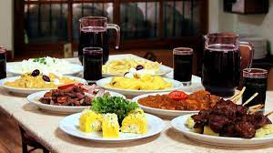
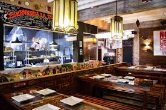

Nuestros mejores platos:

Ceviche
Es un plato consistente en carne marinada ―pescado, mariscos o ambos― en aliños cítricos.

Papa a la huancaina
Es un entrante típico de la gastronomía peruana que se ha difundido a diferentes regiones del Perú. Es uno de los productos gastronómicos más populares y representativos del Perú.

Arroz con pollo
Es un plato típico de América Latina y España con variaciones regionales según el país. Consiste en arroz cocinado con pollo, en presas o desmechado, verduras, y sazonado con especias.
Bebidas
Realizamos todo tipo de bebidas tipicas.

Visitenos , No se defraudara
Tenemos locales amplios y decorados para la ocacion

Ubiquenos.
Contamos con 10 locales en todo el Perú